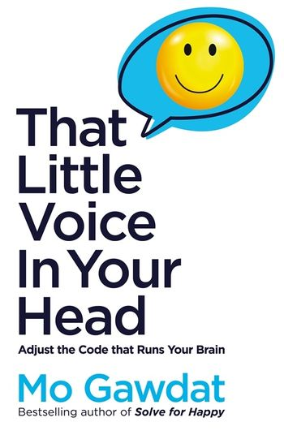

That little voice in your head, by Gawdat
Monday July 4, 2022
Rob Archangel (of Archangel Ink) sent me Mo Gawdat's latest book to review, so I skimmed it. Gawdat's son died at 21. The book is a collection of stoic, Buddhist, and TED Talk philosophy. You could do worse, though I do think Gawdat is wrong about AI and consciousness. That Little Voice is uncomfortably like watching him struggle to mourn.

To its credit, the book includes summaries.
Summary of Part One
4-3-2-1, those are the reasons our brains make us unhappy.
4 (wrong) Inputs distort our perception of the truth. Three come from within us. Those are conditioning, recycled thoughts and trapped emotions. But the biggest one is all-pervasive around us. It is the hidden triggers, from the news media to the entertainment industry, all the way to the advice of a friend that does not apply to your life context. Don’t let your thoughts be influenced by your inner inputs. See them for what they are and weed them out. Then, whatever you do, stop injecting your life with hidden triggers. You are what you think. Stop letting the thoughts of others make you who you are.
3 (exaggerated) Defences keep us safe but make us suffer. Our brains have built within them every defence mechanism that’s helped other species. A reptilian brain that lives for avoiding danger, a mammalian brain that exists to seek rewards and avoid pain, and a rational brain that is constantly planning and analysing. Those defences keep us stuck in Aversion, Attachment and an All-Pervasive Dissatisfaction. Learn to make your reptile feel safe, make your mammal enjoy what is and remind your rational human to see that all is OK.
2 (opposite) Polarities are part of every one of us. The feminine and the masculine. Those polarities are not determined by biology, gender or sexual preference. They are a way of life. One is about being and the other about doing. Our modern world, and each of us, are submerged in doing. We need more of our feminine qualities. We need to learn to be.
1 (harmful) Thought – the incessant type of thinking – is the result of letting our thoughts repeat, unchecked by our deliberate attention. Many clinical conditions that are associated with unhappiness are the result of scattered thoughts and mind-wandering. Learning to pay deliberate attention has always been my top advice for anyone who seeks to be happy. Be here. Repeat a bad habit often enough, and you become really good at it because, through neuroplasticity, Practice Makes Miserable. Stop practising your own unhappiness. Turn the process the opposite way. Learn to go to the happiness gym and work on the habits that reverse the 4-3-2-1 model.
Practise limiting your information diet only to what’s good for you. Remember to practise your gratitude muscle. Live more in the feminine and pay deliberate attention. One small step after another and your brain will be rewired for happiness to be its default state.
Summary of Part Two
The impact of a thought is surely not confined within our skull and surely not to the instant that thought took place. What you think changes you emotionally and physically, and then it changes your pattern of thinking itself as it plays endlessly on repeat.
Our emotions, erratic as they sometimes may seem, are hyperpredictable. They are triggered by thoughts that follow repeatable patterns. The modern world teaches us to hide our emotions and this disconnects us from them, even to deny them. Leaving our emotions unexpressed turns us into zombies walking through life uninterested or pressure cookers waiting to explode.
But we only feel alive when we feel, just like we only feel when we are alive. We need to get in touch with our emotions, acknowledge them – even celebrate them – sit with them, experience their storms and harness their energy to move us forward.
Our autonomic nervous system responds to the world even before our thoughts catch up with what happened. Our sympathetic nervous system stresses us to protect us. It prepares us to face challenges and threats with superhuman powers. This feature in our design saved our species, but now, as our stress response lingers, it is leading us to unhappiness.
We need to engage our parasympathetic nervous system to remind our bodies that things are OK. Learn to relax, be around those who do, and create a sense of safety by remembering our blessings and removing what stresses us from our lives.
Finally, we need to stop the endless loops of incessant thinking. They take us down a spiral of unhappiness and leave no positive impact on the world whatsoever. To stop the thinking, treat your brain like a third party. I call mine Becky and I have a clear agreement with my brain. Bring me joyful thoughts or useful thoughts. Every other thought is a waste of my life. Sign the contract. Get your brain to comply.
Summary of Part Three
Many happiness teachings may seem to come across as an invitation to calm or control one’s brain. Because our stray incessant thoughts can cause a lot of unhappiness, it is obvious that keeping our minds in check is a sure path to a calmer, happier life. But it’s not the only path.
If an active mind is engaged in useful thinking – generating thoughts that improve your life and state of wellbeing – then, by all means, think as much as you can.
There are four types of useful thoughts. I strongly urge you to make those types of thoughts the norm of what your brain focuses on. That way it will no longer have the capacity to think the negative thoughts that waste your life and make you unhappy.
1) Experiential Thinking - Experiencing the world exactly as it is requires your brain to engage just as much as it needs to when processing any other kind of thought. As a matter of fact, because your brain is only able to do one thing at a time, observing the world with mindfulness is a bulletproof way to live in reality and not inside your own head. Meditation is a valuable practice that can, over time, reconfigure your brain to become more capable of living in the present moment instead of lost in its own thoughts.
Meditation is just a practice, though. To truly transform those skills into the reality of your everyday life, use newer versions of it that are fit for the modern world to learn to be present every minute of every day.
2) Problem-Solving – is the most highly praised type of thinking in our analytical modern world. The capacity to overcome challenges by finding solutions is mostly applied in our work and professional life. Yet, it can equally be applied to lead to our happiness and wellbeing.
The happiness flowchart is a good example of how you can use your disciplined problem-solving brain to ensure you bounce back to happiness swiftly when an event disturbs your mood. Once you’ve learned to recognize, acknowledge, even embrace, an emotion, find the thought that triggered it and then ask yourself three questions:
a. Is it true? Is there evidence to support the validity of the thought triggering my happiness. If the thought is fiction created by your brain, drop it. If it is true, then ask the next question...
b. Can I do something about it? Unhappiness, you see, is just a survival mechanism. It’s your brain’s invitation for you to do something about what it sees as a suboptimal condition for your survival and success. If there is something you can do about what’s making you unhappy, do it. The unhappiness will go away and your world will become better. If there is nothing you can do, then ask the last question ...
c. Can I accept and commit? Life, every now and again, is bound to send a predicament your way. An event that doesn’t meet your hopes of how life should be which is beyond your ability to fix or improve. When there is nothing you can do about your situation, learn to accept it for what it is, then commit to do whatever you can do to make your life better despite, or even because of, the challenge that you are facing.
3) Flow – When we flow, we merge our being with our doing. We get absorbed into what we do fully, we do it better and we feel lighter. To flow, make the task at hand a tiny bit harder than your current skill, clear away the distractions and break it into smaller tasks and focus on the small bits instead of the final results, do each bit to the best of your abilities and forget about time. Give every task all the time it needs.
4) Give – It is the smartest thing you can ever do. Nothing will ever make you happier or make our world better.
Our brains are nothing but sophisticated computer systems. They are highly predictable in their operations. You don’t necessarily need a silent brain to be happy. All you need is a positive, useful brain. Your brain will do what you tell it to do. It’s time to start your training.